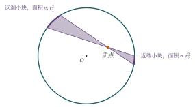
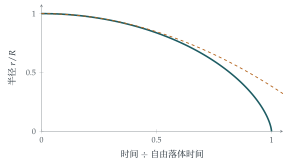

STEP III 1999，第 9 题
继续之前，请先阅读题目（原题为英文）。题目载于 STEP Support Programme 的题目资料库： step.maths.org/questions/99-s3-q9
引子
试想像一颗空心的行星：一层薄薄的岩石球壳（spherical shell），里面空无一物。假如你站在球壳内靠近壳壁的地方，也许会以为自己会被附近的岩石吸过去。事实上你会浮在原处：球壳内任何一处，球壳的引力都恰好是零。球壳较近的一侧距离较短，但较远的一侧面积较大，两种效应刚好完全抵销。
这就是牛顿球壳定理（Newton’s shell theorem）。牛顿（Newton）花了多年才把它证明出来，而它对牛顿的引力理论至为重要：连同与它配对的另一个结果（在球体之外，引力就如全部质量都集中在球心一样），它说明了为何可以把地球和太阳当作点来处理。在练习和“背后的数学”一节中，我们会用这个定理计算一团气体云塌缩成恒星需要多少时间。
动笔之前
考虑圆环上两小段位于同一直径两端的部分。画出它们对质点（particle）所施的力。哪些分量（component）互相抵销，哪些相加？
这两小段与质点的距离相同。它们的引力沿轴方向的分量相等，因而相加；垂直于轴的分量大小相等、方向相反，因而抵销。把整个圆环这样逐对配起来，可知合力沿着轴，指向圆环的中心。
逐步解题
阶段 1 圆环
圆环上每一小段与质点的距离都是 \(\sqrt{x^2 + r^2}\)，而连接两者的直线与轴成角 \(\psi\)，其中 \(\cos\psi = \frac{x}{\sqrt{x^2 + r^2}}\)。质量为 \(\delta m\) 的一小段所施的引力为 \(\frac{G\,\delta m}{x^2 + r^2}\)，其中沿轴方向的分量为 \(\frac{G\,\delta m}{x^2 + r^2}\cdot\frac{x}{\sqrt{x^2 + r^2}}\)。每一小段的距离和角度都相同，所以这些分量直接相加，得 \[\frac{Gmx}{(x^2 + r^2)^{3/2}}. \qed\]
阶段 2 把球壳切成圆环
设球壳的中心为 \(O\)，质点位于轴上，与 \(O\) 相距 \(b\)。把球壳切成多个垂直于轴的薄圆环，并以圆环上的点在 \(O\) 处与轴所成的角 \(\phi\) 来标记各圆环。圆环的半径、位置和质量分别是甚么？
角度为 \(\phi\) 的圆环半径为 \(a\sin\phi\)，其中心沿轴与 \(O\) 相距 \(a\cos\phi\)，因此与质点相距 \(a\cos\phi - b\)。圆环的宽度为 \(a\,\delta\phi\)，所以面积为 \(2\pi a\sin\phi \cdot a\,\delta\phi\)，占球壳面积 \(4\pi a^2\) 的 \(\frac12\sin\phi\,\delta\phi\)。它的质量是 \(\frac12M\sin\phi\,\delta\phi\)。根据第 1 阶段的结果，它沿着轴把质点拉向 \(\phi = 0\) 的一端，力的大小为 \[\frac{G\cdot\frac12M\sin\phi\,\delta\phi\,(a\cos\phi - b)}{\bigl((a\cos\phi - b)^2 + a^2\sin^2\phi\bigr)^{3/2}} = \frac{GM}{2}\cdot\frac{(a\cos\phi - b)\sin\phi\,\delta\phi}{(a^2 - 2ab\cos\phi + b^2)^{3/2}}.\] （正负号会自动处理妥当：位于质点前方、满足 \(a\cos\phi > b\) 的圆环把质点拉向一方，位于质点后方的圆环则把它拉向另一方。）
阶段 3 合适的变量
分母含有 \(s^2 = a^2 - 2ab\cos\phi + b^2\)。\(s\) 在几何上代表甚么？\(\mathrm{d}s\) 以 \(\mathrm{d}\phi\) 表示是甚么？
根据余弦定理（cosine rule），\(s\) 是质点到圆环的距离。求导可得 \(2s\,\mathrm{d}s = 2ab\sin\phi\,\mathrm{d}\phi\)，而由 \(s^2 = a^2 - 2ab\cos\phi + b^2\) 解出 \(a\cos\phi\)，可得 \(a\cos\phi - b = \frac{a^2 - b^2 - s^2}{2b}\)。所以合力为 \[\frac{GM}{2}\int \frac{a^2 - b^2 - s^2}{2b\,s^3}\cdot\frac{s\,\mathrm{d}s}{ab} = \frac{GM}{4ab^2}\int_{a - b}^{a + b}\Bigl(\frac{a^2 - b^2}{s^2} - 1\Bigr)\mathrm{d}s,\] 其中 \(s\) 由 \(a - b\)（最近的点，\(\phi = 0\)）变到 \(a + b\)（最远的点，\(\phi = \pi\)）。
阶段 4 结果为零
\[\int_{a-b}^{a+b}\Bigl(\frac{a^2 - b^2}{s^2} - 1\Bigr)\mathrm{d}s = (a^2 - b^2)\Bigl(\frac{1}{a - b} - \frac{1}{a + b}\Bigr) - 2b = (a^2 - b^2)\cdot\frac{2b}{a^2 - b^2} - 2b = 0.\] 球壳对质点不施任何力。■
如果质点在球壳之外，即 \(b > a\)，情况会有甚么不同？\(s\) 的上下限变成 \(b - a\) 和 \(b + a\)。重做最后一行，并证明所受的力为 \(\frac{GM}{b^2}\)，指向球心，就如全部质量都集中在球心一样。
回顾
先看对称性（symmetry）。把相对的小段配对，未经任何计算便已看出力的方向。
由较简单的形状逐步建构。点组成圆环；圆环组成球壳。
选择切合物理情境的变量。把变量由角 \(\phi\) 换成距离 \(s\)，一个棘手的积分便变得轻而易举。
背后的数学
牛顿的圆锥论证
牛顿本人的证明（《自然哲学的数学原理》（Principia）第一卷命题 70）完全没有用到积分。以质点为顶点，画一个狭窄的对顶圆锥，它在球壳上截出两小块曲面（图 10.7.1）。这两小块的面积与它们到质点的距离的平方 \(r_1^2\) 和 \(r_2^2\) 成正比（两小块与圆锥所成的角相等，因为一条弦在两端与圆所成的角相等）。所以它们的质量与 \(r_1^2\) 和 \(r_2^2\) 成正比，而它们的引力与质量除以距离平方成正比，因此大小相等、方向相反。每一个通过质点的对顶圆锥都互相抵销，所以合力为零。这种抵销之所以成立，正是因为平方反比定律（inverse-square law）：若换成距离的任何其他次方，球壳便会对质点产生推力或拉力。

塌缩的云团
STEP III 1987 Q14 把这个定理反过来用。在均匀球体之外，位于球面的质点所受的引力为 \(GMm/r^2\)，就如全部质量都集中在球心一样。现在取一团静止的均匀球状尘埃云，半径为 \(R\)，质量为 \(M\)，让它在自身引力下塌缩。球面上的质点只感受到它以内的质量，而在所有物质向内坠落的过程中，这质量一直是 \(M\)，所以它向内的速率 \(v = -\dot r\) 满足 \[v\frac{\mathrm{d}v}{\mathrm{d}r} = -\frac{GM}{r^2}, \qquad\text{所以}\qquad v^2 = 2GM\Bigl(\frac1r - \frac1R\Bigr).\] 代入 \(r = R\cos^2\alpha\)（其中一道练习），可得到达半径 \(r\) 所需的时间为 \(\sqrt{\frac{R^3}{2GM}}\bigl(\alpha + \frac12\sin 2\alpha\bigr)\)。当 \(\alpha = \frac\pi2\) 时，整团云塌缩成一点，所需时间就是自由落体时间（free-fall time） \[t_{\text{ff}} = \frac{\pi}{2}\sqrt{\frac{R^3}{2GM}} = \sqrt{\frac{3\pi}{32G\rho}},\] 其中 \(\rho\) 是密度。值得注意的是，云团的每一层球壳都在同一刻到达中心，因为这个时间只取决于密度（图 10.7.2）。对于一团典型的星际云，每立方米约有 \(10^{-17}\) kg，\(t_{\text{ff}}\) 约为 \(700\,000\) 年：这决定了恒星形成的时间尺度。

牛顿早在 1660 年代已掌握平方反比定律，但到 1687 年才发表他的引力理论。据一些历史学家所说，其中一个原因是他在证明球壳定理之前，无法说明为何可以把地球当作点质量（point mass）；一旦证明了，《自然哲学的数学原理》的其余部分便水到渠成。今天，这个定理只是高斯定律（Gauss’s law）的一个简短推论。高斯定律指出，穿过任何闭合曲面向外流出的引力场总量，与曲面内的质量成正比。在球壳内取一个同心的球面。它没有包围任何质量，所以穿过它的总流量为零。单凭这一点并不足以令场为零（均匀场穿过任何闭合曲面的总流量都是零，从一边流入，从另一边流出），但这里对称性帮了忙：场必定笔直指向球心或背离球心，而且在球面上各处强度相同，所以总流量为零就意味着场为零。同一条定律也支配电场，这就是为甚么带电金属壳内没有电场，也是为甚么汽车能保护你免受雷击。
思维技巧
要求出一个连续物体的效应，可把它切成效应已知的小块，再把它们加起来。利用对称性来选择怎样切。
点组成圆环，圆环组成球壳，球壳组成实心球。在大学里，每一种场（引力场、电场、磁场）都是这样由场源计算出来的，由此更引出高斯（Gauss）定理和斯托克斯（Stokes）定理的向量微积分（vector calculus）。
延伸练习
球壳之外。完成“暂停思考”方框中的问题：证明在球壳之外，所受的力为 \(\frac{GM}{b^2}\)。由此推断，质量为 \(M\) 的均匀实心球对球外质点的引力，就如其质量集中在球心一样。
塌缩时间。试做 STEP III 1987，第 14 题。这道题求一团尘埃云在自身引力下塌缩需要多少时间；用三角代换（trigonometric substitution）便可算出积分。
穿越地球的隧道。证明在均匀实心球之内，与球心相距 \(b\) 处所受的力为 \(\frac{GMb}{a^3}\)，与 \(b\) 成正比。由此推断，把一个球投进一条穿过地球中心的隧道，它会来回振荡，周期（period）为 \(2\pi\sqrt{a^3/(GM)}\)，约 \(84\) 分钟，与一颗贴着地面飞行的卫星的周期相同。
另一种力的定律。假如引力遵从立方反比定律，球壳内所受的力是否仍然为零？（重做第 3 阶段，以 \(\frac{1}{s^3}\) 取代 \(\frac{1}{s^2}\)。）
延伸阅读
Daniel Kleppner & Robert Kolenkow, An Introduction to Mechanics（Cambridge University Press），关于万有引力的章节，当中包括球壳定理。
Subrahmanyan Chandrasekhar, Newton’s Principia for the Common Reader（Oxford University Press）。由一位诺贝尔奖得主讲解牛顿的证明，包括命题 70 和 71。
Andrew Pontzen, The Universe in a Box（Riverhead）。讲述引力、塌缩和模拟如何解释宇宙的结构。